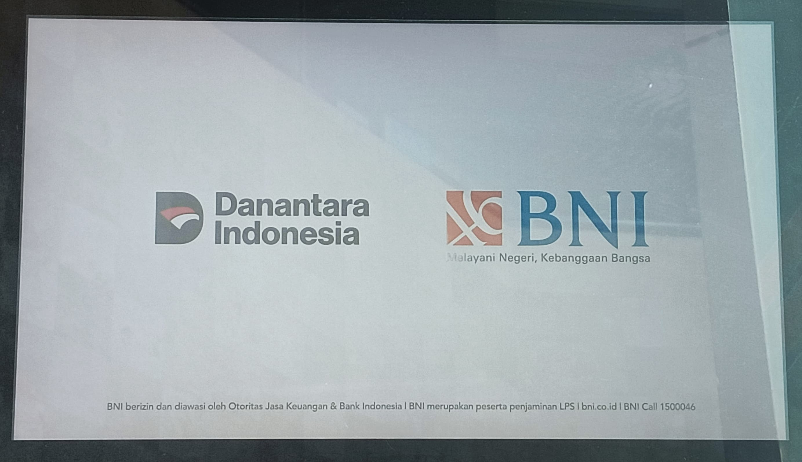

Pengambilan Kartu
Pengambilan kartu hilang/expired/wondr.
Langkah 1: Klik Layar
Klik pada layar alat DigiCS untuk masuk ke menu selanjutnya.
Langkah 2: Pilih Bahasa

Pilih bahasa yang akan digunakan untuk proses-proses pendaftaran selanjutnya.
Langkah 3: Pilih Menu

Pilih transaksi yang akan diinginkan, dalam hal ini pilih menu "Penggantian Kartu ATM".
Langkah 4: Syarat dan Ketentuan

Selesaikan halaman Syarat dan Ketentuan dengan membaca dan menekan tombol selanjutnya, serta centang kotak persetujuannya.
Langkah 5: Pilih Menu

Pilih menu "Ganti Kartu" jika anda ingin mengganti kartu yang expired atau rusak atau hendak mengambil kartu Debit yang telah terdaftar di Wondr.
Langkah 6: Nomor Kartu atau Nomor Rekening

Masukan nomor kartu jika anda memilih menu "Ambil Kartu" dan masukan nomor rekening jika anda memilih menu "Kartu Hilang".
Langkah 7: Pindai KTP


Letakkan KTP seperti pada gambar kedua.
Langkah 8: Pindai Sidik Jari


Letakkan jari kanan atau kiri seperti pada gambar kedua.
Langkah 9: Pilih Kartu

Pilih kartu anda.
Langkah 9: Masukan PIN

masukan PIN baru atau PIN sebelumnya, transaksi selesai.